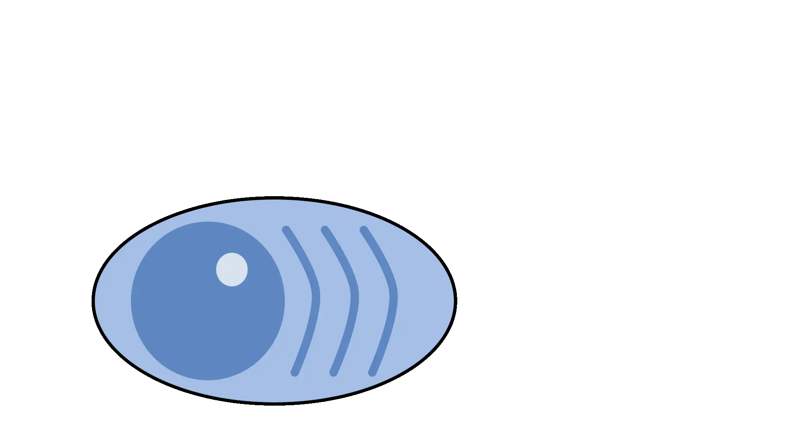

Mechanisms of B cell biology
B cells produce antibodies that defend the host from infectious pathogens. Through the germinal center response, B cells are able to undergo mutation, selection, and affinity maturation, enabling the immune system to generate highly specific and protective responses.
Associated Paper
mRNA-based influenza vaccine expands the B cell response breadth in humans
Matz H. et al. Nature Immunology (2026)